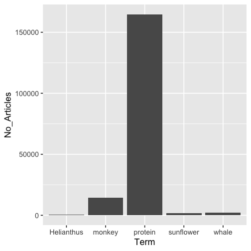

Install
You can get this package at CRAN here, or install it within R by doing
install.packages("rplos")Or install the development version from GitHub
remotes::install_github("ropensci/rplos")What is this?
rplos is a package for accessing full text articles from the Public Library of Science journals using their API.
Information
You used to need a key to use rplos - you no longer do as of 2015-01-13 (or v0.4.5.999).
rplos vignetttes: https://docs.ropensci.org/rplos/
PLOS API documentation: http://api.plos.org/
PLOS Solr schema is at https://gist.github.com/openAccess/9e76aa7fa6135be419968b1372c86957 but is 1.5 years old so may not be up to date.
Crossref API documentation can be found at https://github.com/CrossRef/rest-api-doc. See also rcrossref (on CRAN) with a much fuller implementation of R functions for all Crossref endpoints.
Throttling
Beware, PLOS recently has started throttling requests. That is, they will give error messages like “(503) Service Unavailable - The server cannot process the request due to a high load”, which means you’ve done too many requests in a certain time period. Here’s what they say on the matter:
Please limit your API requests to 7200 requests a day, 300 per hour, 10 per minute and allow 5 seconds for your search to return results. If you exceed this threshold, we will lock out your IP address. If you’re a high-volume user of the PLOS Search API and need more API requests a day, please contact us at api@plos.org to discuss your options. We currently limit API users to no more than five concurrent connections from a single IP address.
Quick start
Search
Search for the term ecology, and return id (DOI) and publication date, limiting to 5 items
searchplos('ecology', 'id,publication_date', limit = 5)
#> $meta
#> # A tibble: 1 x 2
#> numFound start
#> <int> <int>
#> 1 55873 0
#>
#> $data
#> # A tibble: 5 x 2
#> id publication_date
#> <chr> <chr>
#> 1 10.1371/journal.pone.0001248 2007-11-28T00:00:00Z
#> 2 10.1371/journal.pone.0059813 2013-04-24T00:00:00Z
#> 3 10.1371/journal.pone.0080763 2013-12-10T00:00:00Z
#> 4 10.1371/journal.pone.0246749 2021-02-08T00:00:00Z
#> 5 10.1371/journal.pone.0220747 2019-08-01T00:00:00ZGet DOIs for full article in PLoS One
searchplos(q="*:*", fl='id', fq=list('journal_key:PLoSONE',
'doc_type:full'), limit=5)
#> $meta
#> # A tibble: 1 x 2
#> numFound start
#> <int> <int>
#> 1 246927 0
#>
#> $data
#> # A tibble: 5 x 1
#> id
#> <chr>
#> 1 10.1371/journal.pone.0002399
#> 2 10.1371/journal.pone.0002401
#> 3 10.1371/journal.pone.0002403
#> 4 10.1371/journal.pone.0002405
#> 5 10.1371/journal.pone.0002407Query to get some PLOS article-level metrics, notice difference between two outputs
out <- searchplos(q="*:*", fl=c('id','counter_total_all','alm_twitterCount'), fq='doc_type:full')
out_sorted <- searchplos(q="*:*", fl=c('id','counter_total_all','alm_twitterCount'),
fq='doc_type:full', sort='counter_total_all desc')
head(out$data)
#> # A tibble: 6 x 3
#> id alm_twitterCount counter_total_all
#> <chr> <int> <int>
#> 1 10.1371/journal.pcbi.0020071 0 17862
#> 2 10.1371/journal.pbio.1000152 0 7180
#> 3 10.1371/journal.pbio.1000153 5 27702
#> 4 10.1371/journal.pbio.1000159 0 14256
#> 5 10.1371/journal.pbio.1000165 8 30629
#> 6 10.1371/journal.pbio.1000166 0 6884
head(out_sorted$data)
#> # A tibble: 6 x 3
#> id alm_twitterCount counter_total_all
#> <chr> <int> <int>
#> 1 10.1371/journal.pmed.0020124 3890 3226572
#> 2 10.1371/journal.pone.0133079 312 2481307
#> 3 10.1371/journal.pcbi.1003149 216 1766230
#> 4 10.1371/journal.pmed.1000376 9 1213573
#> 5 10.1371/journal.pone.0141854 3804 996693
#> 6 10.1371/journal.pcbi.0030102 65 986338A list of articles about social networks that are popular on a social network
searchplos(q="*:*",fl=c('id','alm_twitterCount'),
fq=list('doc_type:full','subject:"Social networks"','alm_twitterCount:[100 TO 10000]'),
sort='counter_total_month desc')
#> $meta
#> # A tibble: 1 x 2
#> numFound start
#> <int> <int>
#> 1 64 0
#>
#> $data
#> # A tibble: 10 x 2
#> id alm_twitterCount
#> <chr> <int>
#> 1 10.1371/journal.pmed.1000316 1199
#> 2 10.1371/journal.pone.0069841 896
#> 3 10.1371/journal.pone.0073791 1884
#> 4 10.1371/journal.pcbi.1005399 604
#> 5 10.1371/journal.pcbi.1007513 122
#> 6 10.1371/journal.pone.0236517 123
#> 7 10.1371/journal.pbio.1002195 778
#> 8 10.1371/journal.pone.0118093 133
#> 9 10.1371/journal.pone.0155923 200
#> 10 10.1371/journal.pone.0162678 172Show all articles that have these two words less then about 15 words apart
searchplos(q='everything:"sports alcohol"~15', fl='title', fq='doc_type:full', limit=3)
#> $meta
#> # A tibble: 1 x 2
#> numFound start
#> <int> <int>
#> 1 163 0
#>
#> $data
#> # A tibble: 3 x 1
#> title
#> <chr>
#> 1 Alcohol Advertising in Sport and Non-Sport TV in Australia, during Children’s…
#> 2 Alcohol intoxication at Swedish football matches: A study using biological sa…
#> 3 Symptoms of Insomnia and Sleep Duration and Their Association with Incident S…Narrow results to 7 words apart, changing the ~15 to ~7
searchplos(q='everything:"sports alcohol"~7', fl='title', fq='doc_type:full', limit=3)
#> $meta
#> # A tibble: 1 x 2
#> numFound start
#> <int> <int>
#> 1 91 0
#>
#> $data
#> # A tibble: 3 x 1
#> title
#> <chr>
#> 1 Alcohol Advertising in Sport and Non-Sport TV in Australia, during Children’s…
#> 2 Alcohol intoxication at Swedish football matches: A study using biological sa…
#> 3 Symptoms of Insomnia and Sleep Duration and Their Association with Incident S…Remove DOIs for annotations (i.e., corrections) and Viewpoints articles
searchplos(q='*:*', fl=c('id','article_type'),
fq=list('-article_type:correction','-article_type:viewpoints'), limit=5)
#> $meta
#> # A tibble: 1 x 2
#> numFound start
#> <int> <int>
#> 1 2434439 0
#>
#> $data
#> # A tibble: 5 x 2
#> id article_type
#> <chr> <chr>
#> 1 10.1371/journal.pbio.1000146/title Unsolved Mystery
#> 2 10.1371/journal.pbio.1000146/abstract Unsolved Mystery
#> 3 10.1371/journal.pbio.1000146/references Unsolved Mystery
#> 4 10.1371/journal.pbio.1000146/body Unsolved Mystery
#> 5 10.1371/journal.pbio.1000146/supporting_information Unsolved MysteryFaceted search
Facet on multiple fields
facetplos(q='alcohol', facet.field=c('journal','subject'), facet.limit=5)
#> $facet_queries
#> NULL
#>
#> $facet_fields
#> $facet_fields$journal
#> # A tibble: 5 x 2
#> term value
#> <chr> <chr>
#> 1 plos one 31656
#> 2 plos genetics 702
#> 3 plos medicine 699
#> 4 plos neglected tropical diseases 637
#> 5 plos pathogens 459
#>
#> $facet_fields$subject
#> # A tibble: 5 x 2
#> term value
#> <chr> <chr>
#> 1 biology and life sciences 33275
#> 2 medicine and health sciences 30309
#> 3 research and analysis methods 17340
#> 4 biochemistry 14587
#> 5 physical sciences 12502
#>
#>
#> $facet_pivot
#> NULL
#>
#> $facet_dates
#> NULL
#>
#> $facet_ranges
#> NULLRange faceting
facetplos(q='*:*', url=url, facet.range='counter_total_all',
facet.range.start=5, facet.range.end=100, facet.range.gap=10)
#> $facet_queries
#> NULL
#>
#> $facet_fields
#> NULL
#>
#> $facet_pivot
#> NULL
#>
#> $facet_dates
#> NULL
#>
#> $facet_ranges
#> $facet_ranges$counter_total_all
#> # A tibble: 10 x 2
#> term value
#> <chr> <chr>
#> 1 5 39
#> 2 15 12
#> 3 25 33
#> 4 35 47
#> 5 45 47
#> 6 55 44
#> 7 65 59
#> 8 75 80
#> 9 85 114
#> 10 95 136Highlight searches
Search for and highlight the term alcohol in the abstract field only
(out <- highplos(q='alcohol', hl.fl = 'abstract', rows=3))
#> $`10.1371/journal.pone.0218147`
#> $`10.1371/journal.pone.0218147`$abstract
#> [1] "Background: Binge drinking, an increasingly common form of <em>alcohol</em> use disorder, is associated"
#>
#>
#> $`10.1371/journal.pone.0138021`
#> $`10.1371/journal.pone.0138021`$abstract
#> [1] "Background and Aim: Harmful <em>alcohol</em> consumption has long been recognized as being the major"
#>
#>
#> $`10.1371/journal.pone.0201042`
#> $`10.1371/journal.pone.0201042`$abstract
#> [1] "\nAcute <em>alcohol</em> administration can lead to a loss of control over drinking. Several models argue"And you can browse the results in your default browser
highbrow(out)
Full text urls
Simple function to get full text urls for a DOI
full_text_urls(doi='10.1371/journal.pone.0086169')
#> [1] "http://journals.plos.org/plosone/article/file?id=10.1371/journal.pone.0086169&type=manuscript"Full text xml given a DOI
(out <- plos_fulltext(doi='10.1371/journal.pone.0086169'))
#> 1 full-text articles retrieved
#> Min. Length: 110717 - Max. Length: 110717
#> DOIs: 10.1371/journal.pone.0086169 ...
#>
#> NOTE: extract xml strings like output['<doi>']Then parse the XML any way you like, here getting the abstract
library("XML")
xpathSApply(xmlParse(out$`10.1371/journal.pone.0086169`), "//abstract", xmlValue)
#> [1] "Mammalian females pay high energetic costs for reproduction, the greatest of which is imposed by lactation. The synthesis of milk requires, in part, the mobilization of bodily reserves to nourish developing young. Numerous hypotheses have been advanced to predict how mothers will differentially invest in sons and daughters, however few studies have addressed sex-biased milk synthesis. Here we leverage the dairy cow model to investigate such phenomena. Using 2.39 million lactation records from 1.49 million dairy cows, we demonstrate that the sex of the fetus influences the capacity of the mammary gland to synthesize milk during lactation. Cows favor daughters, producing significantly more milk for daughters than for sons across lactation. Using a sub-sample of this dataset (N = 113,750 subjects) we further demonstrate that the effects of fetal sex interact dynamically across parities, whereby the sex of the fetus being gestated can enhance or diminish the production of milk during an established lactation. Moreover the sex of the fetus gestated on the first parity has persistent consequences for milk synthesis on the subsequent parity. Specifically, gestation of a daughter on the first parity increases milk production by ∼445 kg over the first two lactations. Our results identify a dramatic and sustained programming of mammary function by offspring in utero. Nutritional and endocrine conditions in utero are known to have pronounced and long-term effects on progeny, but the ways in which the progeny has sustained physiological effects on the dam have received little attention to date."Search within a field
There are a series of convience functions for searching within sections of articles.
For example:
plossubject(q='marine ecology', fl = c('id','journal'), limit = 10)
#> $meta
#> # A tibble: 1 x 2
#> numFound start
#> <int> <int>
#> 1 2287 0
#>
#> $data
#> # A tibble: 10 x 2
#> id journal
#> <chr> <chr>
#> 1 10.1371/journal.pone.0092590 PLoS ONE
#> 2 10.1371/journal.pone.0092590/title PLoS ONE
#> 3 10.1371/journal.pone.0092590/abstract PLoS ONE
#> 4 10.1371/journal.pone.0092590/references PLoS ONE
#> 5 10.1371/journal.pone.0092590/body PLoS ONE
#> 6 10.1371/journal.pone.0092590/introduction PLoS ONE
#> 7 10.1371/journal.pone.0092590/results_and_discussion PLoS ONE
#> 8 10.1371/journal.pone.0092590/materials_and_methods PLoS ONE
#> 9 10.1371/journal.pone.0092590/conclusions PLoS ONE
#> 10 10.1371/journal.pone.0149852 PLOS ONEHowever, you can always just do this in searchplos() like searchplos(q = "subject:science"). See also the fq parameter. The above convenience functions are simply wrappers around searchplos, so take all the same parameters.
Search by article views
Search with term marine ecology, by field subject, and limit to 5 results
plosviews(search='marine ecology', byfield='subject', limit=5)
#> id counter_total_all
#> 5 10.1371/journal.pone.0012946 5309
#> 3 10.1371/journal.pone.0167128 5423
#> 1 10.1371/journal.pone.0092590 12839
#> 2 10.1371/journal.pone.0149852 18954
#> 4 10.1371/journal.pone.0011372 28244Visualize
Visualize word use across articles
plosword(list('monkey','Helianthus','sunflower','protein','whale'), vis = 'TRUE')
#> $table
#> No_Articles Term
#> 1 14528 monkey
#> 2 646 Helianthus
#> 3 1876 sunflower
#> 4 164537 protein
#> 5 2142 whale
#>
#> $plot
progress bars
res <- searchplos(q='*:*', limit = 2000, progress = httr::progress())
#> |=====================================| 100%
#> |=====================================| 100%
#> |=====================================| 100%
#> |=====================================| 100%Meta
- Please report any issues or bugs.
- License: MIT
- Get citation information for
rplosin R doingcitation(package = 'rplos') - Please note that this package is released with a Contributor Code of Conduct. By contributing to this project, you agree to abide by its terms.
This package is part of a richer suite called fulltext, along with several other packages, that provides the ability to search for and retrieve full text of open access scholarly articles. We recommend using fulltext as the primary R interface to rplos unless your needs are limited to this single source.